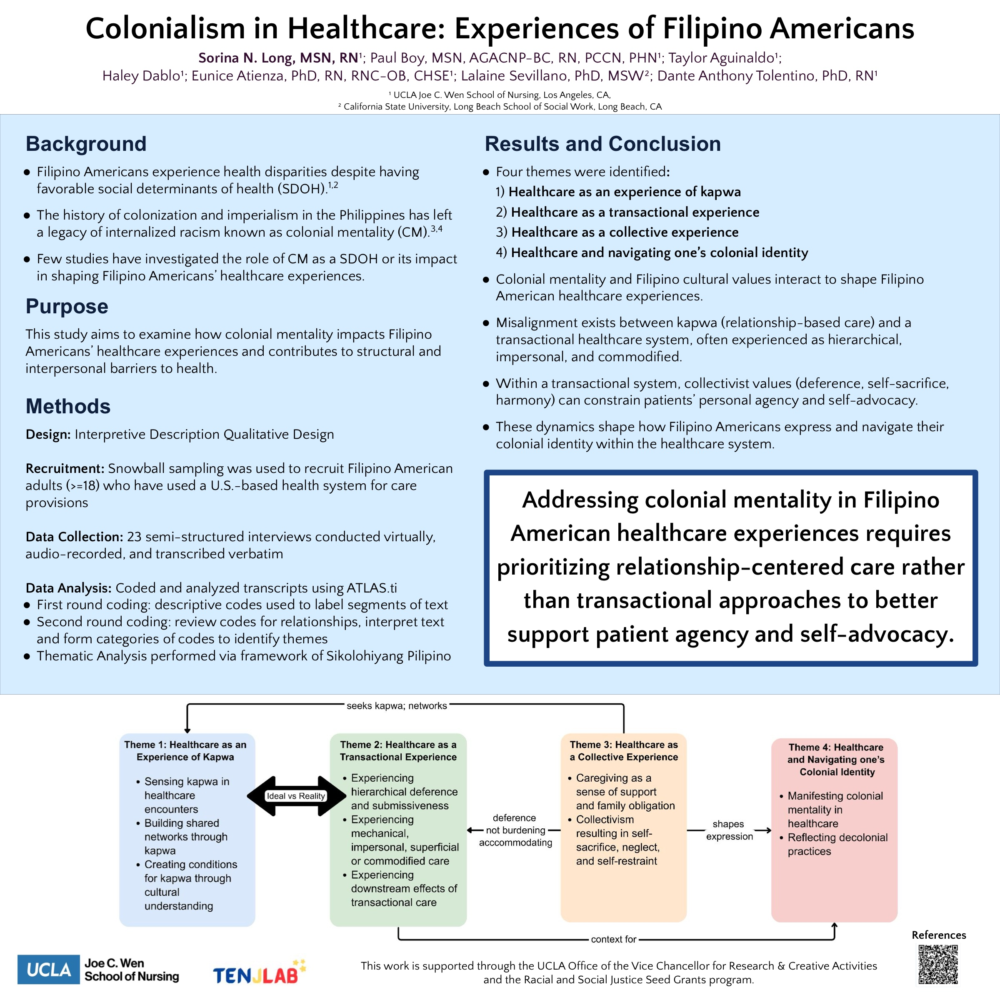

Poster · Western Institute of Nursing · 2026
Colonial mentality, a legacy of colonization, can shape how Filipino Americans experience the U.S. healthcare system and may create barriers to good care.
Filipino Americans often face health challenges even though they tend to have advantages such as education and employment. This study asked 23 Filipino American adults about their experiences in the U.S. healthcare system, exploring how “colonial mentality” (internalized beliefs left by a history of colonization) can shape those experiences and contribute to barriers to care. The goal is care that recognizes this history and treats culture as part of health.
The team used interpretive description, a qualitative approach, with 23 virtual semi-structured interviews coded and analyzed in ATLAS.ti through the lens of Sikolohiyang Pilipino (Filipino psychology).
The work is supported by the UCLA Office of the Vice Chancellor for Research and the Racial and Social Justice Seed Grants program. As a qualitative study, it describes lived experiences rather than measuring cause and effect.
Colonial mentality is examined as a social determinant of health that is often overlooked.
Participants described structural and interpersonal barriers in the healthcare system.
Findings point toward care that recognizes history, identity, and culture.
